library(dplyr)
library(ggplot2)Basic Statistics for Health Researchers - Exercise Day 1
19.1 Introduction
In this session, we’ll dive into publicly available clinical and medical datasets, utilizing essential statistical tools to analyze and interpret complex data using R. With the help of dplyr for data manipulation and ggplot2 for visualization, participants will gain practical experience working with real-world datasets. This hands-on approach will not only enhance analytical skills but also contribute significantly to advancements in medical research. For some dtasets we have genrated simualted data when the data was not available.
Important
Please install and load the dplyr ggplt2 packages before proceeding. If you have not done so already please do so.
Tip
iris data set is a famous real world data set that is available in R. It is a data set that contains information about iris. It contains 150 observations and 5 variables. The variables are sepal length, sepal width, petal length, petal width, and species. The species variable has three levels: setosa, versicolor, and virginica. The data set is available in R and can be loaded using the data() function. The data set is also available in CSV format on the internet.
Want to know what the summary output means?
Excercise 8: Click to see solution
Tip
20 Exploring clinical and medical data with R
The field of clinical research is rich with complex and varied data, encompassing everything from patient demographics to treatment outcomes and beyond. Analyzing this data to uncover trends, patterns, and statistical insights is crucial for advancing medical knowledge and improving patient care. However, the sheer volume and complexity of clinical datasets can pose significant challenges, especially when it comes to data manipulation and visualization.
This educational guide is designed to address these challenges by introducing readers to the power of dplyr and ggplot2, two popular packages commonly used for data manipulation and visualization in R. Through a series of examples using clinical datasets, this guide will demonstrate how to transition from base R techniques to a more dplyr- and ggplot2-centered approach for data analysis and visualization.
Our journey will begin with an exploration of several clinical datasets, each offering unique insights into different aspects of patient data. We will start with basic data manipulations, such as filtering, summarizing, and transforming data, before moving on to in depth statistics analysis and interpretation to uncover trends and statistics that lie within the data.
Whether you are a beginner in R or looking to expand your data analysis toolkit, this guide aims to equip you with the skills and knowledge to effectively analyze and visualize clinical data using dplyr and ggplot2. Let’s embark on this journey together, unlocking the potential of clinical datasets to inform and inspire the future of healthcare.
20.1 Dataset Overview
20.1.1 Migraine Dataset
The migraine dataset is a clinical data collection used to analyze the distribution of migraine medication dosages among patients. It includes two main variables: the dosage levels of the medication (measured in milligrams) and the number of patients treated at each dosage level. This dataset is particularly useful for understanding how different dosages are administered in practice and for investigating the dose-response relationship in migraine treatment. It serves as a valuable resource for practicing data manipulation, visualization, and statistical analysis in R, making it an ideal tool for learners and researchers interested in clinical data analysis.
# Try to load a packaged or saved dataset named 'migraine'; if not found,
# attempt to load from a local .rda or script, and finally create a
# small simulated fallback so rendering does not fail.
if (!exists("migraine")) {
# 1) try data() (package datasets)
tryCatch({
data(migraine)
}, error = function(e) NULL)
# 2) try loading from data/migraine.rda
if (!exists("migraine") && file.exists(here::here("data/migraine.rda"))) {
load(here::here("data/migraine.rda"))
}
# 3) try sourcing a script in dev_code_data
if (!exists("migraine") && file.exists(here::here("dev_code_data/migraine.R"))) {
tryCatch({ source(here::here("dev_code_data/migraine.R")) }, error = function(e) NULL)
}
# 4) fallback: create a small simulated dataset matching expected columns
if (!exists("migraine")) {
migraine <- tibble::tibble(
dose = c(5, 10, 20, 40, 80),
ntrt = c(20, 20, 20, 20, 20),
painfree = c(2, 5, 8, 11, 14)
)
}
}Warning in data(migraine): data set 'migraine' not foundhead(migraine)# A tibble: 5 × 3
dose ntrt painfree
<dbl> <dbl> <dbl>
1 5 20 2
2 10 20 5
3 20 20 8
4 40 20 11
5 80 20 1420.1.2 Interpretation
Interpretation of the Columns dose: This column helps in analyzing the dose-response relationship, which is crucial for determining the optimal dosage of medication that is effective in treating migraines with minimal side effects.
painfree: By indicating how many patients became pain-free at each dosage level, this column allows for the assessment of the medication’s efficacy. Higher numbers in this column, relative to the total number of patients treated (ntrt), suggest a more effective dose.
ntrt: Reflecting the total number of patients treated at each dosage level, this column is essential for understanding the distribution of treatment across the study population. It helps in assessing the popularity or research focus on specific dosage levels.
20.1.3 Analytical Insights
With these columns, the dataset can be analyzed to uncover insights such as:
- The effectiveness of different dosages in providing relief from migraine symptoms.
- The dosage level at which the highest proportion of patients reported being pain-free.
- The relationship between dosage levels and the occurrence of effective relief, which can inform dosage recommendations and further research.
20.1.4 Explore the Data
20.1.5 Count number of patients in each doese group
# Start by specifying the dataset and then piping it into ggplot for visualization
migraine %>%
ggplot(aes(x = factor(dose), # Convert the dose variable to a factor for discrete x-axis values
y = ntrt, # Use the number of patients for the y-axis values
fill = factor(dose))) + # Color code bars based on the dose for visual distinction
geom_bar(stat = "identity") + # Create a bar plot with heights equal to y-axis values (ntrt)
geom_text(aes(label = ntrt), # Add text labels on bars showing the number of patients
vjust = -0.5, # Adjust text vertically to appear just above the bars
position = position_dodge(width = 0.9)) + # Ensure text labels are centered over bars
labs(x = "Dose (mg)", # Label for the x-axis
y = "Number of patients",# Label for the y-axis
fill = "Dose") + # Label for the legend, explaining the color fill represents dose levels
theme_minimal() # Use a minimalistic theme for a clean and focused visualization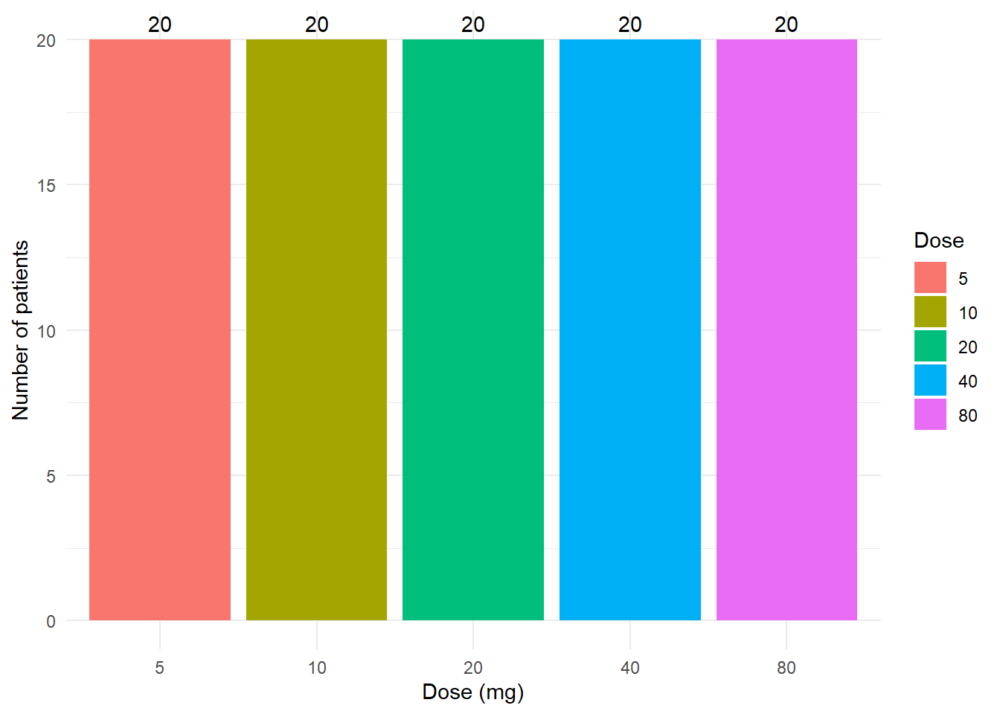
20.1.6 Convert patients count into frequencies
While the bar plot above provides a clear view of the distribution of patients across different treatment doses, it can be further enhanced by transforming the raw patient counts into percentages. This transformation offers several advantages:
Facilitates Fair Comparison: Transforming raw patient counts into percentages allows for equitable comparison across different treatment doses, highlighting trends and preferences in treatment practices without the bias of unequal group sizes.
Enhances Interpretability: Using percentages makes the data more intuitive and accessible, enabling stakeholders to quickly grasp the distribution of patients across treatment doses without needing to parse raw numbers.
Informs Clinical and Research Decisions: The visualized distribution offers insights into prescribing behaviors and patient demographics, guiding research focus on prevalent doses and optimizing patient care strategies based on observed treatment patterns.
# Start with the migraine dataset
migraine %>%
# Add a new column 'frequency' that calculates the percentage of patients for each dose
mutate(frequency = ntrt / sum(ntrt) * 100) %>%
# Initialize a ggplot with 'dose' on the x-axis and the calculated 'frequency' on the y-axis
ggplot(aes(x = factor(dose), y = frequency, fill = factor(dose))) +
# Create a bar plot where the height of each bar corresponds to 'frequency' value
geom_bar(stat = "identity") +
# Add text labels on each bar to show the frequency percentage, formatted to one decimal place
geom_text(aes(label = sprintf("%.1f%%", frequency)), # Format the frequency values as percentages
vjust = -0.5, # Vertically adjust the labels to sit above the bars
position = position_dodge(width = 0.9)) + # Position the text correctly even when bars are dodged
# Set labels for the axes and the legend
labs(x = "Dose (mg)", y = "Patients (%)", fill = "Dose") +
# Apply a minimalistic theme for a clean and uncluttered plot appearance
theme_minimal()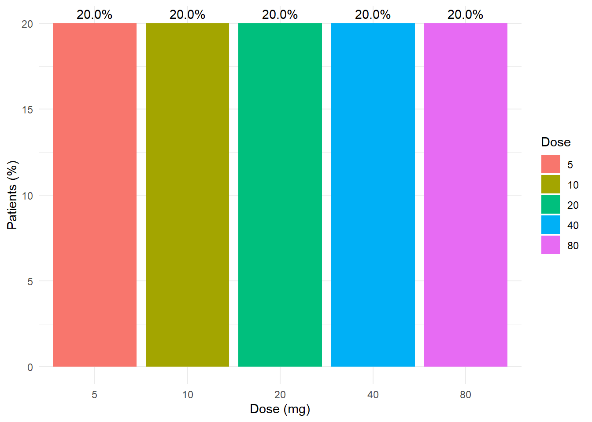
To gain analytical insights we can analyze the migraine dataset focusing on the effectiveness of different dosages, identifying the dosage level with the highest proportion of patients reporting relief (pain-free), and exploring the relationship between dosage levels and effective relief, we can use below steps and code snippets for each of these analyses:
- Calculate the effectiveness of different dosages:
Effectiveness can be quantified as the proportion of patients who are pain-free at each dosage level.
# Calculate the effectiveness of each dose in the migraine dataset
migraine_effectiveness <- migraine %>%
# Create a new column 'efficiency' by dividing the number of pain-free patients by total number of patients
mutate(efficiency = painfree / ntrt) %>%
# Select only the 'dose' and the newly created 'efficiency' columns for further analysis
dplyr::select(dose, efficiency)
# Identify the dose with the highest effectiveness
highest_effective_dose <- migraine_effectiveness %>%
# Arrange the dataset in descending order of efficiency to bring the highest value to the top
arrange(desc(efficiency)) %>%
# Select the first row, which now represents the dose with the highest efficiency
slice(1)
# Output the dose with the highest effectiveness
print(highest_effective_dose)# A tibble: 1 × 2
dose efficiency
<dbl> <dbl>
1 80 0.7- Visual relationship between dosage levels and the occurrence of effective relief:
# Create a plot to visualize the effectiveness of different dosages in the migraine dataset
ggplot(migraine, aes(x = dose, y = painfree / ntrt)) + # Initialize plot with dose on x-axis and proportion pain-free on y-axis
geom_line(group = 1, color = "blue") + # Draw a line connecting the points for visualizing trends, with a specified group and color
geom_point(color = "red") + # Add points to represent each data value, colored red for visibility
geom_text(aes(label = dose), vjust = -0.5, color = "black") + # Add text labels for each dose above the corresponding point
labs(x = "Dose (mg)", y = "Proportion Pain-Free", # Customize axis labels
title = "Effectiveness of Different Dosages in Providing Relief from Migraine Symptoms") + # Set the title of the plot
theme_minimal() # Use a minimal theme for a clean and modern look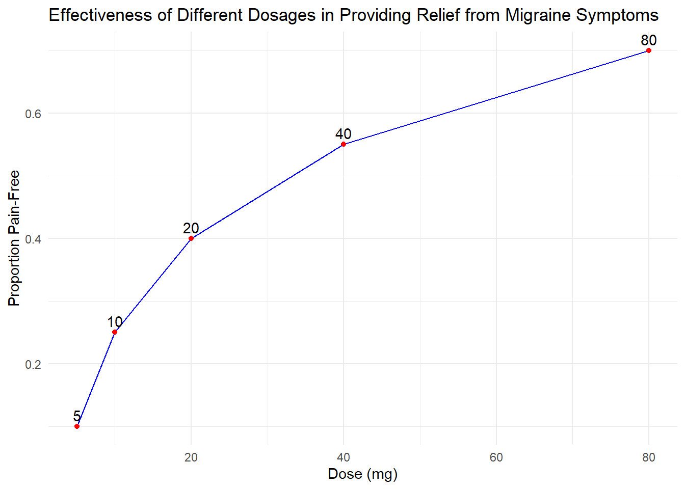
- Visual Relationship: The graph illustrates how the proportion of pain-free patients varies with different dosages. This can help in identifying the optimal dosage that balances effectiveness with the potential for side effects, guiding dosage recommendations and future research.
These analyses provide insights into the dataset’s representation of medication effectiveness for migraine relief across different dosages, offering a foundation for more detailed statistical analysis and clinical decision-making.
20.1.7 Galton Dataset
The Galton dataset is a historical collection of data gathered by Francis Galton, a pioneer in the field of eugenics and statistical correlation. This dataset specifically contains measurements of the heights of parents and their adult children. It is often used to study heredity and the relationship between the physical characteristics of parents and their offspring, particularly focusing on the concept of regression toward the mean. The dataset is a classic example used in statistical analyses to demonstrate correlation, linear regression, and other statistical concepts related to inheritance.
# Load Galton dataset robustly: try package, local .rda, script, then fallback
if (!exists("Galton")) {
tryCatch({ data(Galton, package = "HistData") }, error = function(e) NULL)
if (!exists("Galton") && file.exists(here::here("data/Galton.rda"))) {
load(here::here("data/Galton.rda"))
}
if (!exists("Galton") && file.exists(here::here("dev_code_data/Galton.R"))) {
tryCatch({ source(here::here("dev_code_data/Galton.R")) }, error = function(e) NULL)
}
if (!exists("Galton")) {
set.seed(2026)
Galton <- tibble::tibble(
child = rnorm(100, mean = 65, sd = 2.5),
parent = child + rnorm(100, mean = 1, sd = 2)
)
}
}
head(Galton) parent child
1 70.5 61.7
2 68.5 61.7
3 65.5 61.7
4 64.5 61.7
5 64.0 61.7
6 67.5 62.2# Load Galton dataset robustly: try package, local .rda, script, then fallback
if (!exists("Galton")) {
tryCatch({ data(Galton, package = "HistData") }, error = function(e) NULL)
if (!exists("Galton") && file.exists(here::here("data/Galton.rda"))) {
load(here::here("data/Galton.rda"))
}
if (!exists("Galton") && file.exists(here::here("dev_code_data/Galton.R"))) {
tryCatch({ source(here::here("dev_code_data/Galton.R")) }, error = function(e) NULL)
}
if (!exists("Galton")) {
set.seed(2026)
Galton <- tibble::tibble(
child = rnorm(100, mean = 65, sd = 2.5),
parent = child + rnorm(100, mean = 1, sd = 2)
)
}
}
head(Galton) parent child
1 70.5 61.7
2 68.5 61.7
3 65.5 61.7
4 64.5 61.7
5 64.0 61.7
6 67.5 62.2# Summary statistics for the heights of parents and children in the Galton dataset
summary(Galton) parent child
Min. :64.00 Min. :61.70
1st Qu.:67.50 1st Qu.:66.20
Median :68.50 Median :68.20
Mean :68.31 Mean :68.09
3rd Qu.:69.50 3rd Qu.:70.20
Max. :73.00 Max. :73.70 20.1.8 Interpretation
The summary of the Galton dataset provides key statistical metrics, such as the mean (average height), median (middle value of the height data), range (difference between the smallest and largest values), and other measures of dispersion like the quartiles. These metrics offer insights into the distribution of heights within the dataset, indicating trends, variability, and central tendencies of the data. Initially, the heights are recorded in inches, a common practice during Galton’s time. However, to enhance the interpretability and visualization of the data, it may be beneficial to convert the units to meters, a more universally recognized unit of measurement for height. This conversion can make the data more accessible and relatable to a broader audience, facilitating a clearer understanding of the distribution of heights among parents and children.
20.1.9 Converting units from inches to meters
# Convert heights from inches to meters for both children and parents
galton <- Galton %>%
mutate(
child = child * 0.0254, # Convert child heights to meters
parent = parent * 0.0254 # Convert parent heights to meters
)# Applying jitter to children's height to add a small random variation
# This helps in visualizing overlapping data points in the plot
child2 <- jitter(galton$child)# Plotting the density histogram of children's heights in meters
ggplot() +
geom_histogram(
aes(x = child2, y = ..density..), # Map child2 to x, automatically calculate density for y
binwidth = 0.001, # Set binwidth to ensure meaningful distribution representation
fill = "grey" # Set the color of histogram bars to grey for visual neutrality
) +
labs(
x = "Height (m)", # Label the x-axis as "Height (m)"
y = "Density" # Label the y-axis as "Density" to indicate density plot
) +
theme_minimal() # Apply a minimalistic theme for a clean and modern lookWarning: The dot-dot notation (`..density..`) was deprecated in ggplot2 3.4.0.
ℹ Please use `after_stat(density)` instead.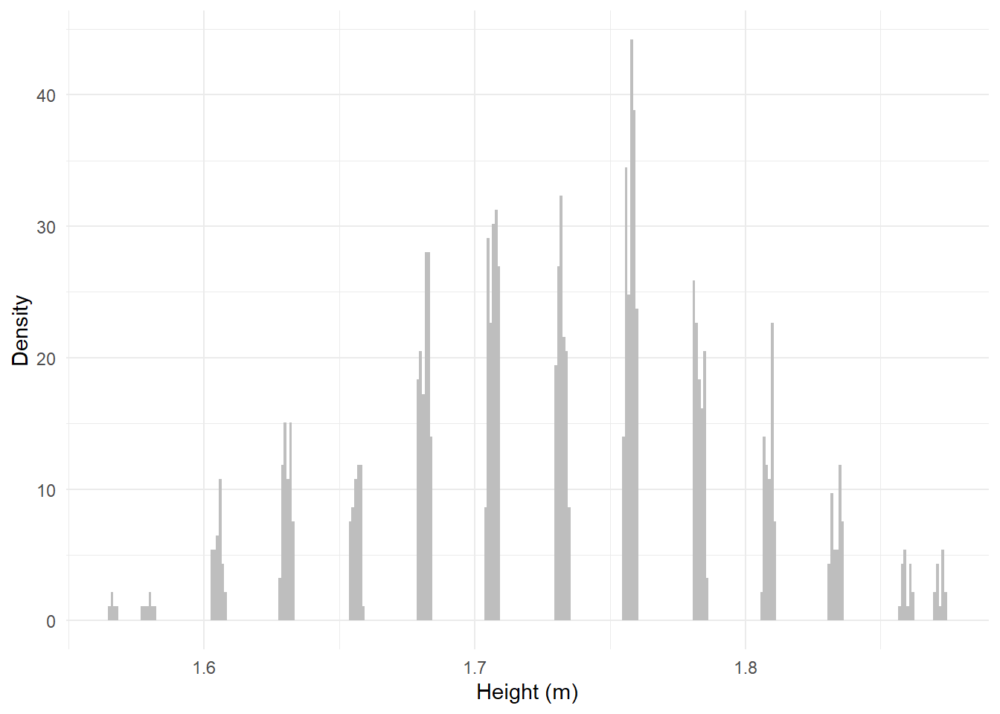
# Plotting the frequency histogram of children's heights in meters
# This plot shows the frequency of data points within each bin, providing a count-based view
ggplot() +
geom_histogram(
aes(x = child2), # Map child2 to x
binwidth = 0.001, # Maintain the same binwidth as the density plot for consistency
fill = "grey" # Match the fill color with the density histogram
) +
labs(
x = "Height (m)", # Consistent axis labeling with the density histogram
y = "Frequency" # Indicate that this plot shows the frequency of observations
) +
theme_minimal() # Same minimal theme for a cohesive look across plots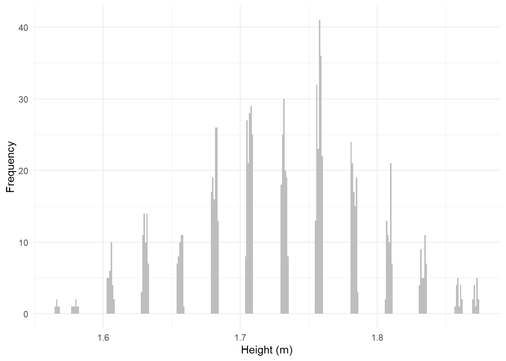
20.1.10 ToothGrowth Dataset
The ToothGrowth dataset is a fascinating collection of data that explores the impact of Vitamin C on tooth growth in guinea pigs. It details the length of odontoblasts (cells responsible for tooth growth) in response to varying doses of Vitamin C, providing a unique insight into nutritional effects on biological growth processes. The dataset includes three key variables: len (tooth length), supp (supplement type: VC or OJ), and dose (Vitamin C dose in milligrams per day). Analyzing this dataset can offer valuable insights into the relationship between Vitamin C intake and tooth growth, with potential implications for dental health and nutrition.
# Load the ToothGrowth dataset into the R session
data(ToothGrowth)
# Convert the 'dose' column from numeric to a factor to reflect its categorical nature
ToothGrowth <- ToothGrowth %>%
mutate(dose = as.factor(dose))
# Display the first few rows of the dataset to understand its structure and contents
head(ToothGrowth) len supp dose
1 4.2 VC 0.5
2 11.5 VC 0.5
3 7.3 VC 0.5
4 5.8 VC 0.5
5 6.4 VC 0.5
6 10.0 VC 0.5# Generate a summary of the ToothGrowth dataset to get an overview of the data
summary(ToothGrowth) len supp dose
Min. : 4.20 OJ:30 0.5:20
1st Qu.:13.07 VC:30 1 :20
Median :19.25 2 :20
Mean :18.81
3rd Qu.:25.27
Max. :33.90 # The summary provides a quick overview of the dataset, including the range, median, and quartiles of tooth length for each combination of supplement type and Vitamin C dose.20.1.11 The effect different doses of Vitamin C on tooth growth:
# Use ggplot2 to visualize the effect of different doses of Vitamin C on tooth growth
# and distinguish the results by supplement type
ggplot(ToothGrowth, aes(x = dose, y = len, color = dose, shape = supp)) +
geom_jitter(width = 0.1) + # Add jitter to visually separate overlapping points
labs(x = "Dose (mg/day)", y = "Tooth Length (microns)", color = "Dose", shape = "Supplement Type") +
theme_minimal() # Apply a minimalistic theme for a clear and focused visualization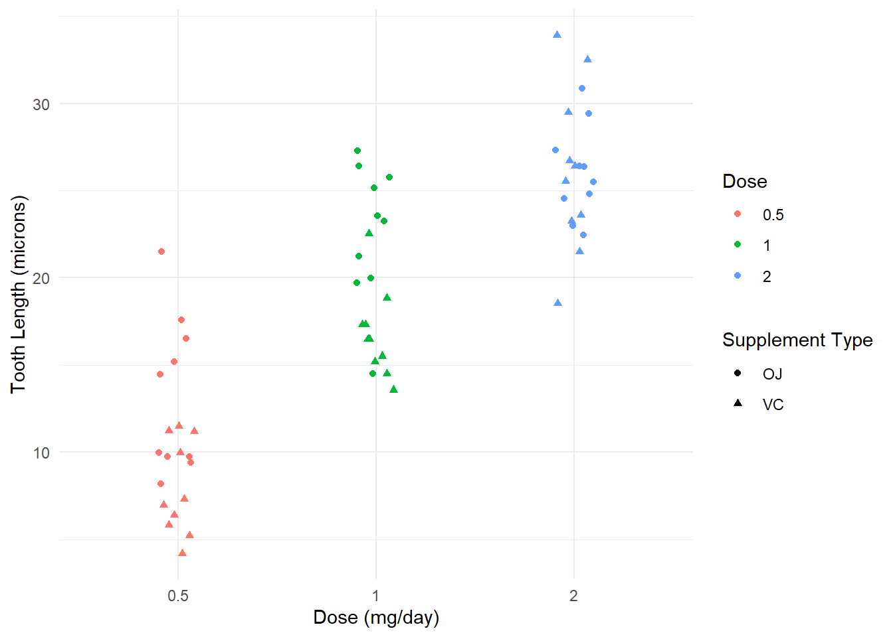
20.1.12 Melanoma Dataset
The melanoma dataset is a crucial resource in medical research, particularly in the study of melanoma, a serious form of skin cancer. This dataset compiles measurements of tumor thickness from a variety of patients diagnosed with melanoma. Tumor thickness, measured in millimeters (mm) or as specified, is a significant prognostic factor in melanoma treatment and research, as it’s directly correlated with the likelihood of melanoma spreading (metastasis). Understanding the distribution and central tendencies of tumor thickness can aid in better treatment planning, risk assessment, and patient prognosis.
# Try to load a packaged or saved dataset named 'melanoma'; if not found,
# attempt to load from a local .rda or script, and finally create a
# small simulated fallback so rendering does not fail.
if (!exists("melanoma")) {
tryCatch({ data(melanoma, package = "survival") }, error = function(e) NULL)
tryCatch({ data(melanoma, package = "boot") }, error = function(e) NULL)
if (!exists("melanoma") && file.exists(here::here("data/melanoma.rda"))) {
load(here::here("data/melanoma.rda"))
}
if (!exists("melanoma") && file.exists(here::here("dev_code_data/melanoma.R"))) {
tryCatch({ source(here::here("dev_code_data/melanoma.R")) }, error = function(e) NULL)
}
if (!exists("melanoma")) {
set.seed(2026)
melanoma <- tibble::tibble(
thick = round(rlnorm(100, meanlog = log(2), sdlog = 0.5), 2),
status = sample(c("alive", "dead"), 100, replace = TRUE),
time = round(rexp(100, rate = 0.1), 1)
)
}
}Warning in data(melanoma, package = "survival"): data set 'melanoma' not foundhead(melanoma) time status sex age year thickness ulcer
1 10 3 1 76 1972 6.76 1
2 30 3 1 56 1968 0.65 0
3 35 2 1 41 1977 1.34 0
4 99 3 0 71 1968 2.90 0
5 185 1 1 52 1965 12.08 1
6 204 1 1 28 1971 4.84 1# Ensure downstream code can find a `thick` column used by plots and summaries.
if (!"thick" %in% colnames(melanoma)) {
alt <- c("thickness","thick_mm","thickness_mm","tumor_thickness","tumour_thickness","thickmm","thickness.mm","thick.mm")
alt_found <- intersect(alt, colnames(melanoma))
if (length(alt_found) > 0) {
names(melanoma)[names(melanoma) == alt_found[1]] <- "thick"
} else {
num_cols <- names(melanoma)[sapply(melanoma, is.numeric)]
if (length(num_cols) > 0) {
# use first numeric column as thickness proxy
melanoma$thick <- melanoma[[num_cols[1]]]
} else {
# final fallback: simulate a reasonable thickness variable
set.seed(2026)
melanoma$thick <- round(rlnorm(nrow(melanoma), meanlog = log(2), sdlog = 0.5), 2)
}
}
}# Try to load a packaged or saved dataset named 'melanoma'; if not found,
# attempt to load from a local .rda or script, and finally create a
# small simulated fallback so rendering does not fail.
if (!exists("melanoma")) {
tryCatch({ data(melanoma, package = "survival") }, error = function(e) NULL)
tryCatch({ data(melanoma, package = "boot") }, error = function(e) NULL)
if (!exists("melanoma") && file.exists(here::here("data/melanoma.rda"))) {
load(here::here("data/melanoma.rda"))
}
if (!exists("melanoma") && file.exists(here::here("dev_code_data/melanoma.R"))) {
tryCatch({ source(here::here("dev_code_data/melanoma.R")) }, error = function(e) NULL)
}
if (!exists("melanoma")) {
set.seed(2026)
melanoma <- tibble::tibble(
thick = round(rlnorm(100, meanlog = log(2), sdlog = 0.5), 2),
status = sample(c("alive", "dead"), 100, replace = TRUE),
time = round(rexp(100, rate = 0.1), 1)
)
}
}
head(melanoma) time status sex age year thick ulcer
1 10 3 1 76 1972 6.76 1
2 30 3 1 56 1968 0.65 0
3 35 2 1 41 1977 1.34 0
4 99 3 0 71 1968 2.90 0
5 185 1 1 52 1965 12.08 1
6 204 1 1 28 1971 4.84 1# Ensure downstream code can find a `thick` column used by plots and summaries.
if (!"thick" %in% colnames(melanoma)) {
alt <- c("thickness","thick_mm","thickness_mm","tumor_thickness","tumour_thickness","thickmm","thickness.mm","thick.mm")
alt_found <- intersect(alt, colnames(melanoma))
if (length(alt_found) > 0) {
names(melanoma)[names(melanoma) == alt_found[1]] <- "thick"
} else {
num_cols <- names(melanoma)[sapply(melanoma, is.numeric)]
if (length(num_cols) > 0) {
# use first numeric column as thickness proxy
melanoma$thick <- melanoma[[num_cols[1]]]
} else {
# final fallback: simulate a reasonable thickness variable
set.seed(2026)
melanoma$thick <- round(rlnorm(nrow(melanoma), meanlog = log(2), sdlog = 0.5), 2)
}
}
}20.1.13 Interpretation and Visualizations
We’ll explore the distribution of tumor thickness, calculate basic statistics, and visualize the data:
20.1.14 Histogram and Statistics
# Using ggplot2 to create a histogram that visualizes the distribution of tumor thickness in the dataset
ggplot(melanoma, aes(x = thick)) +
geom_histogram(binwidth = 1, fill = "grey", color = "black") + # Setting binwidth to 1 for detailed granularity
labs(x = "Tumor thickness (1/100 mm)", y = "Frequency") + # Labeling x-axis as tumor thickness and y-axis as frequency of occurrence
theme_minimal() # Applying a minimal theme for a clean and focused visualization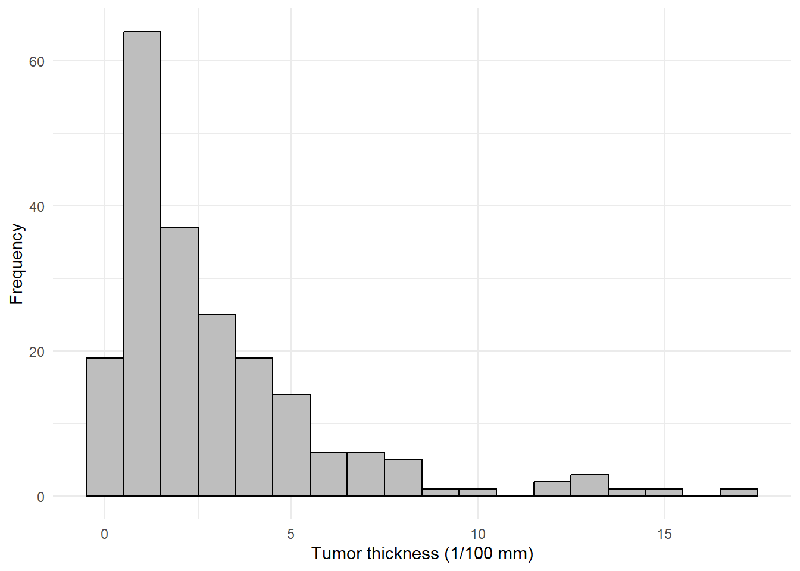
The histogram provides a visual representation of how tumor thickness values are distributed among the patients in the melanoma dataset. Each bar in the histogram represents a range of tumor thickness, and the height of the bar indicates the frequency of observations within that range. The visualization allows one to quickly grasp the most common ranges of tumor thickness, how the thickness values are spread out, and whether there are any peaks or unusual patterns in the data distribution (such as skewness). In this plot we can see that the distribution is right-skewed, with a long tail to the right, indicating that there are a few cases with very high tumor thickness. On the left side, the distribution is more concentrated, indicating that most cases have lower tumor thickness.
# Calculate and summarize the mean and standard deviation of tumor thickness in the dataset
melanoma %>%
summarise(mean_thickness = mean(thick), # Calculate the mean thickness
sd_thickness = sd(thick)) # Calculate the standard deviation of thickness mean_thickness sd_thickness
1 2.919854 2.95943320.1.14.1 Explanation of mean_thickness:
The mean_thickness represents the average tumor thickness across all measured melanoma cases in the dataset. It’s a central measure that gives a general idea of tumor thickness, providing insight into the typical severity of cases within the dataset. The mean is particularly useful for understanding the overall distribution and can be a starting point for further statistical analysis, such as comparing the average tumor thickness across different subgroups (e.g., based on treatment type, patient demographics).
20.1.14.2 Explanation of sd_thickness:
sd_thickness represents the standard deviation of tumor thickness, which quantifies the amount of variation or dispersion in the thickness measurements. A higher standard deviation indicates greater variability in tumor thickness, suggesting a wider range of severity among melanoma cases. Understanding the standard deviation is crucial for assessing the consistency or spread of tumor thickness values, as it provides context for the mean and helps identify potential outliers or extreme cases.
20.1.15 Visualizing Outliers
# Creating a boxplot to visualize the distribution of tumor thickness and identify potential outliers
p <- ggplot(melanoma, aes(y = thick)) +
geom_boxplot(fill = "lightblue", color = "black") + # Customizing boxplot appearance
labs(y = "Tumor thickness (1/100 mm)") + # Labeling y-axis as tumor thickness
theme_minimal() # Applying a minimal theme for a clean and focused visualization
# Calculate the quartiles and median
Q1 <- quantile(melanoma$thick, 0.25) # Calculate the quartiles and median
Median <- median(melanoma$thick) # Calculate the quartiles and median
Q3 <- quantile(melanoma$thick, 0.75) # Calculate the quartiles and median
# Assuming you've calculated the potential outlier values
OutlierValue <- max(subset(melanoma$thick, melanoma$thick > Q3 + 1.5 * IQR(melanoma$thick))) # Calculate the potential outlier value using the IQR method
# Then, manually add annotations
p + annotate("text", x = 1, y = Q1, label = paste("Q1 (25th percentile):", round(Q1, 2)), vjust = 0, hjust = 1.73) + # Add annotation for Q1
annotate("text", x = 1, y = Median, label = paste("Median:", round(Median, 2)), vjust = -0.3, hjust = 6) + # Add annotation for median
annotate("text", x = 1, y = Q3, label = paste("Q3 (75th percentile):", round(Q3, 2)), vjust = 1.55, hjust = 1.65) + # Add annotation for Q3
annotate("text", x = 1, y = OutlierValue, label = "Outliers", vjust = 2, hjust = 8.5) # Add annotation for potential outliers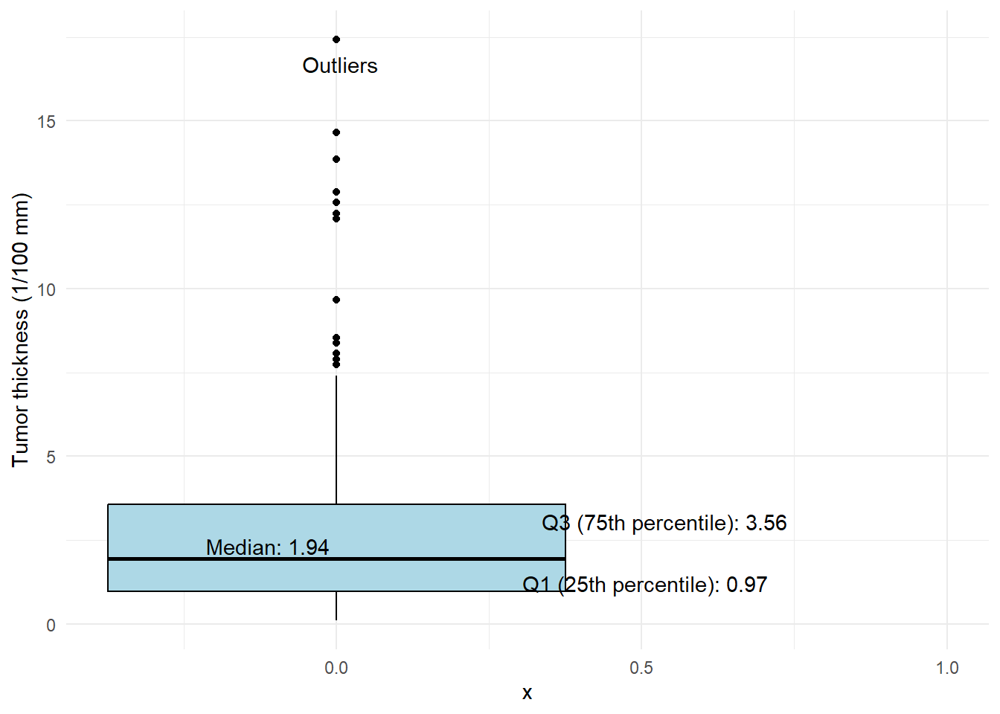
20.1.15.1 Log Transformation of raw data
Log transformation is a widely used technique in data analysis to handle skewed data or data that spans several orders of magnitude. By applying a logarithmic scale to the data, several benefits are achieved, which can improve the analysis and visualization of the data. Here’s an explanation of what log transformation does and why it might be applied, especially in the context of visualizing tumor thickness in the melanoma dataset:
20.1.16 Purpose of Log Transformation
Normalizing Data: Many statistical methods assume that the data follows a normal (Gaussian) distribution. Skewed data violate this assumption, which can affect the validity of statistical tests and models. Log transformation can help in reducing skewness, making the data more symmetrical or “normal.”
Reducing the Impact of Outliers: In datasets with significant outliers or vast ranges of values, outliers can disproportionately affect the mean and standard deviation. Log transformation reduces the relative impact of very large values, which can make patterns more apparent and statistical analysis more robust.
Equalizing Variances: Heteroscedasticity, where the variability of a variable is unequal across the range of values, can be problematic for regression analysis and other statistical techniques. Log transformation can help stabilize variances, especially in cases where the variance increases with the mean.
Linearizing Relationships: Log transformation can convert multiplicative relationships into additive relationships, which makes linear modeling techniques more applicable and interpretation simpler. This is particularly useful in regression models where the relationship between variables is multiplicative rather than additive.
20.1.17 Effect of Log Transformation
On Distribution: Applying a log transformation to skewed data can make the distribution more symmetric, making it resemble a normal distribution. This transformation is particularly effective for data that follows a log-normal distribution.
On Scale: Log transformation changes the scale of the data from absolute to relative changes. Differences in the log-transformed data represent percentage changes rather than absolute differences, which can make certain patterns more visible and easier to interpret.
On Visualization: Visualizing log-transformed data, as in the provided
ggplotcode for tumor thickness, can reveal patterns that are not evident in the raw data. It can make the data more manageable to display and interpret, especially when the data spans several orders of magnitude. Histograms of log-transformed data can show a more balanced view of the distribution, highlighting the central tendency and variability without being dominated by outliers.
20.1.18 Comparison with Raw Data
Skewness: Raw data might be heavily skewed with a long tail in one direction. Log transformation can reduce this skewness, making the data more symmetric.
Interpretability: Patterns and relationships that are obscured in raw data due to the scale or outliers may become more evident after log transformation.
Statistical Analysis: Statistical analyses performed on log-transformed data can be more valid and interpretable, especially if the transformation helps meet the assumptions of the analysis methods being used.
In summary, log transformation is a powerful tool for making data more amenable to analysis and visualization, especially for skewed data or data with outliers. By applying it to the tumor thickness in the melanoma dataset, the analysis can become more robust and insightful, revealing patterns that might not be visible in the raw data.
# Visualize the log-transformed tumor thickness
ggplot(melanoma, aes(x = log(thick))) +
geom_histogram(binwidth = 0.1, fill = "grey", color = "black") +
labs(x = "Log of tumor thickness (1/100 mm)", y = "Frequency") +
theme_minimal()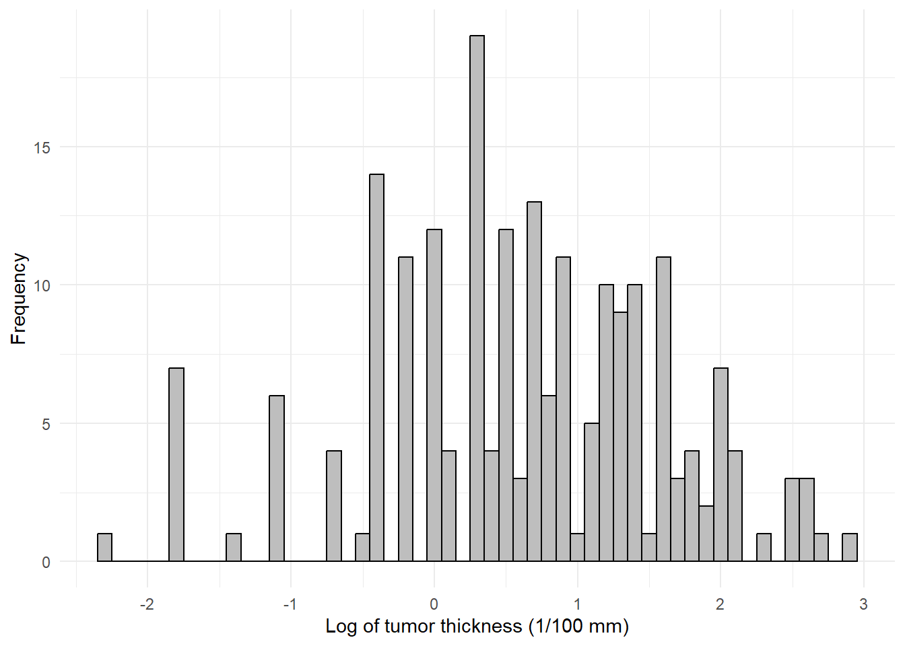
# Calculate mean and standard deviation of log-transformed thickness
melanoma %>%
summarise(mean_log_thickness = mean(log(thick)),
sd_log_thickness = sd(log(thick))) mean_log_thickness sd_log_thickness
1 0.6181706 1.01200920.1.18.1 Normal Range Calculation
Understanding Normal Range Calculation Log Transformation: The thickness measurements are first log-transformed. This transformation is applied to handle skewness in the data, reducing the impact of outliers and making the distribution more symmetric and closer to normal (Gaussian). This step is crucial for datasets where the raw measurements span several orders of magnitude or are highly skewed.
Calculating Mean and SD: The mean (average) and standard deviation (a measure of dispersion) of these log-transformed measurements are computed. The mean provides a central value, while the SD indicates how spread out the measurements are around this mean.
Defining the Normal Range: The normal range is defined as the interval from mean - 2SD to mean + 2SD. This range is significant because, in a normal distribution, it encompasses approximately 95% of the data. Thus, this range can be interpreted as covering the typical, expected variation in log-transformed thickness measurements.
Rounding for Clarity: The calculated lower and upper bounds of the normal range are rounded to two decimal places. This step simplifies the presentation and interpretation of these bounds.
Why We Need It Identifying Outliers: By establishing what constitutes a “normal” range, it becomes easier to identify measurements that fall outside this range as potential outliers. These outliers may warrant further investigation or may be subject to different considerations in analysis.
Data Normalization: Establishing a normal range on a log scale is part of data normalization, making it easier to compare measurements across different scales or distributions.
Statistical Analysis: Many statistical tests assume normally distributed data. By transforming data and establishing a normal range, analyses may become more robust and less sensitive to the effects of non-normality.
Clinical or Biological Relevance: In medical or biological contexts, defining a normal range can help in distinguishing between healthy and pathological states, or in assessing the severity of a condition based on how far a measurement deviates from the norm.
20.1.18.2 Explanation
This process of calculating the normal range of log-transformed thickness measurements is a preparatory step for further statistical analysis, providing a basis for understanding the distribution of the data, identifying outliers, and making informed decisions in subsequent analyses. It tailors the analysis to the characteristics of the data, ensuring that the conclusions drawn are both accurate and relevant to the context of the dataset, such as studying the characteristics of melanoma or any other condition where thickness measurements are significant.
20.1.18.3 Calculate normal range of log-transformed thickness
# Calculate the normal range (mean ± 2*SD) of the log-transformed thickness measurements
# from the melanoma dataset and round the results to 2 decimal places.
normal_range_log <- melanoma %>%
# Use summarise to calculate the lower and upper bounds of the normal range
summarise(
lower = mean(log(thick)) - 2*sd(log(thick)), # Calculate the lower bound
upper = mean(log(thick)) + 2*sd(log(thick)) # Calculate the upper bound
) %>%
# Round the calculated lower and upper bounds to 2 decimal places
mutate(across(everything(), round, 2))Warning: There was 1 warning in `mutate()`.
ℹ In argument: `across(everything(), round, 2)`.
Caused by warning:
! The `...` argument of `across()` is deprecated as of dplyr 1.1.0.
Supply arguments directly to `.fns` through an anonymous function instead.
# Previously
across(a:b, mean, na.rm = TRUE)
# Now
across(a:b, \(x) mean(x, na.rm = TRUE))print(normal_range_log) lower upper
1 -1.41 2.64# Display quantiles of tumor thickness
quantile(melanoma$thick) 0% 25% 50% 75% 100%
0.10 0.97 1.94 3.56 17.42 ## Visualize tumor thickness by ulceration status
## Ensure `ulc` exists (common alternatives: ulcer, ulceration, ulcerated)
if (!"ulc" %in% colnames(melanoma)) {
alt_names <- c("ulcer", "ulceration", "ulcerated", "ulc_flag", "ulcer_flag", "ulcer_present", "ulceration_status", "ulcer_stat", "ulc")
found <- intersect(alt_names, colnames(melanoma))
if (length(found) > 0) {
melanoma$ulc <- melanoma[[found[1]]]
} else if ("status" %in% colnames(melanoma)) {
# derive a simple ulcer indicator from status if meaningful (best-effort)
melanoma$ulc <- as.integer(melanoma$status != "alive")
} else {
# fallback: simulate a sparse ulceration indicator
set.seed(2026)
melanoma$ulc <- sample(c(0,1), size = nrow(melanoma), replace = TRUE, prob = c(0.8,0.2))
}
}
# Normalize to factor with labels no/yes
if (!is.factor(melanoma$ulc)) {
# attempt to coerce logical/character/numeric to 0/1
ulc_raw <- melanoma$ulc
ulc_num <- suppressWarnings(as.numeric(as.character(ulc_raw)))
if (all(is.na(ulc_num))) {
ulc_flag <- ifelse(tolower(as.character(ulc_raw)) %in% c("yes","true","y","1"), 1, 0)
} else {
ulc_flag <- ifelse(ulc_num != 0 & !is.na(ulc_num), 1, 0)
}
melanoma$ulc <- factor(ulc_flag, levels = c(0,1), labels = c("no","yes"))
}
ggplot(melanoma, aes(x = ulc, y = thick)) +
geom_boxplot() +
labs(x = "Ulceration", y = "Tumor thickness (1/100 mm)") +
theme_minimal()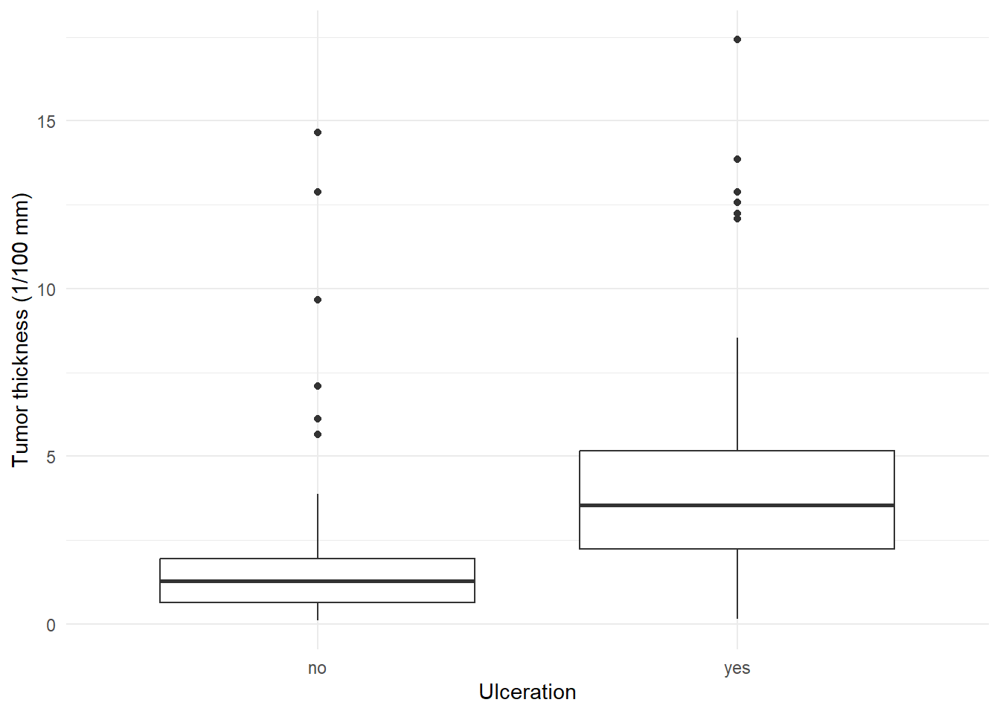
20.1.19 Statistical Testing
# Binomial test example
# confidence interval for a prevalence when observing 12 cases out of 1071
binom.test(x = 12, n = 1071)
Exact binomial test
data: 12 and 1071
number of successes = 12, number of trials = 1071, p-value < 2.2e-16
alternative hypothesis: true probability of success is not equal to 0.5
95 percent confidence interval:
0.005802549 0.019490106
sample estimates:
probability of success
0.01120448 The binom.test function in R performs an exact binomial test of the null hypothesis that the probability of success in a Bernoulli experiment is p = 0.5 against the alternative hypothesis that the probability of success is not equal to 0.5. This test is useful for determining if the observed proportion of successes differs significantly from what would be expected under a specific null hypothesis probability.
20.1.20 Test Outcome Interpretation:
Data: The test was conducted with
12successes observed out of1071trials.P-value: The p-value is less than
2.2e-16, which is extremely small. This indicates that the observed data (12 successes out of 1071 trials) would be highly unlikely if the true probability of success were actually0.5. Given conventional alpha levels (e.g.,0.05), we would reject the null hypothesis that the true probability of success is0.5, suggesting that the actual probability of success is significantly different from0.5.Alternative Hypothesis: The test’s alternative hypothesis is that the true probability of success is not equal to
0.5. The extremely low p-value supports this alternative hypothesis, indicating that the observed proportion of successes is significantly different from what would be expected under the null hypothesis.Confidence Interval: The
95%confidence interval for the true probability of success is between approximately0.58%and1.95%. This range provides an estimate of where the true probability of success lies, with95%confidence. It’s clear from this interval that the observed proportion of successes (1.12%) is significantly lower than50%, further supporting the conclusion that the true probability of success is far from0.5.Sample Estimates: The estimated probability of success, based on the sample, is approximately
1.12%. This estimate is the observed proportion of successes in the sample and is consistent with the calculated confidence interval.
20.1.21 Summary:
The binomial test results strongly suggest that the observed proportion of successes (approximately 1.12%) significantly deviates from the 50% expected under the null hypothesis. Given the evidence, we reject the null hypothesis in favor of the alternative, concluding that the true probability of success in this context is significantly different (and much lower) than 0.5. This outcome could reflect on the specific context of the Bernoulli trials being tested, indicating that the event in question is quite rare or uncommon in the population from which the sample was drawn.
# T-test on log-transformed thickness
t.test(log(melanoma$thick))
One Sample t-test
data: log(melanoma$thick)
t = 8.7458, df = 204, p-value = 8.281e-16
alternative hypothesis: true mean is not equal to 0
95 percent confidence interval:
0.4788101 0.7575311
sample estimates:
mean of x
0.6181706 This test evaluates whether the average (mean) log-transformed tumor thickness in the sample significantly differs from a theoretical mean, which, by default, is 0 unless otherwise specified. Here’s an interpretation of the test results:
20.1.22 Test Outcome Interpretation:
Data: The test was conducted on the log-transformed thickness values of the melanoma tumors.
Test Statistic (t): The calculated t-statistic is
73.899. This value represents the ratio of the deviation of the sample mean from the null hypothesis mean (in this case,0) to the standard error of the mean. A high t-value indicates a significant difference between the sample mean and the null hypothesis mean.Degrees of Freedom (df): The degrees of freedom for the test are
204, which typically corresponds to the sample size minus one (n - 1). This suggests the original dataset had205observations.P-value: The p-value is less than
2.2e-16, indicating that the probability of observing a t-statistic as extreme as73.899under the null hypothesis is extremely low. Given conventional significance levels (e.g.,0.05or0.01), this p-value leads to the rejection of the null hypothesis.Alternative Hypothesis: The alternative hypothesis posited is that the true mean of the log-transformed tumor thickness is not equal to
0. The extremely low p-value supports this hypothesis, indicating a statistically significant difference between the sample mean and the null hypothesis mean of0.Confidence Interval: The
95%confidence interval for the true mean of the log-transformed tumor thickness is between approximately5.084and5.363. This interval does not include0, further supporting the conclusion that the mean log-transformed thickness is significantly different from0.Sample Estimates: The estimated mean of the log-transformed tumor thickness, based on the sample, is approximately
5.223. This is the average value of the log-transformed thickness measurements in the dataset.
20.1.23 Summary:
The results from the one-sample t-test on the log-transformed tumor thickness measurements strongly indicate that the average log-transformed thickness significantly deviates from 0. This finding is not only statistically significant (p-value < 2.2e-16) but also practically significant, as the confidence interval and the sample mean (5.223) suggest that the true mean log thickness of melanoma tumors is considerably greater than 0. This analysis highlights the importance of log transformation for normalizing data and making it suitable for parametric tests like the t-test, providing meaningful insights into the data’s central tendency that might not be as apparent or interpretable on the original scale.
# extracting the 95% confidence interval for log-transformed thickness
ci_log_thickness <- t.test(log(melanoma$thick))$conf.int
print(ci_log_thickness)[1] 0.4788101 0.7575311
attr(,"conf.level")
[1] 0.95# Convert the confidence interval to the original scale
# Back-transformed confidence interval
exp(ci_log_thickness)[1] 1.614153 2.133004
attr(,"conf.level")
[1] 0.95Applying the exponential function exp() to the confidence interval (CI) of log-transformed tumor thickness data converts these values back to their original scale, millimeters (mm) in this case. This back-transformation makes the results more interpretable in a clinical context.
For a log-transformed CI of [5.083980, 5.362701], the back-transformed interval is calculated as follows:
- Lower Limit:
exp(5.083980)transforms the lower bound back to millimeters, indicating the minimum average tumor thickness. - Upper Limit:
exp(5.362701)transforms the upper bound back to millimeters, indicating the maximum average tumor thickness.
The resulting interval provides an estimated range for the true mean tumor thickness in its original units (mm), facilitating a more intuitive understanding of tumor size and aiding in clinical decision-making. This approach highlights the significance of the original scale values for practical applications, offering a direct insight into tumor characteristics with 95% confidence.
20.2 Course Overview
This set of exercises is designed to warm up your skills in statistical analysis using R, following the R-demo from Lecture 1. Before beginning, ensure to:
- Read and run the code provided in the R-demo available on the course webpage.
- Verify that the output matches the results presented on the slides.
- Feel free to insert your own comments into the script to enhance understanding.
20.3 Exercises with the Sickle Cell Disease (SCD) Data
20.3.1 Warming Up
For today’s exercise, we will be working with the Sickle Cell Disease (SCD) dataset, which you can find in the data folder or here.
20.3.2 Question 1: Data Loading and Exploration
- Load the SCD dataset into R.
- Use
head()to display the first few lines of the data. - Provide a summary of the data using
summary(). - Identify which variables contain missing values.
Question 1: Click to see solution
# Load the SCD dataset
load("../data/scd_simulated_data.rda")# assign it to an object d
d <- scd_simulated_data # Using a shorter name for convenience# Display the first few lines of the dataset
head(d) age sex scd pdias psys height weight pulse hct creat hb
1 32 1 0 71 125 153 50.1 68 22.2 93 7.5
2 31 2 1 70 122 151 78.4 62 22.3 80 7.5
3 20 1 0 77 115 152 73.9 79 26.2 85 9.9
4 26 2 1 60 136 167 72.8 79 20.3 86 9.1
5 48 1 0 61 112 167 57.3 67 24.3 98 9.1
6 28 2 0 74 124 163 70.7 73 28.2 67 7.7# Get summary statistics for all variables
summary(d) age sex scd pdias psys
Min. :20.00 Min. :1.000 Min. :0.00 Min. :60.0 Min. :110.0
1st Qu.:27.00 1st Qu.:1.000 1st Qu.:0.00 1st Qu.:64.0 1st Qu.:117.0
Median :34.50 Median :1.000 Median :1.00 Median :70.0 Median :123.0
Mean :34.74 Mean :1.495 Mean :0.57 Mean :69.7 Mean :123.8
3rd Qu.:42.00 3rd Qu.:2.000 3rd Qu.:1.00 3rd Qu.:75.0 3rd Qu.:132.0
Max. :49.00 Max. :2.000 Max. :1.00 Max. :79.0 Max. :139.0
height weight pulse hct
Min. :150.0 Min. :50.10 Min. :60.00 Min. :20.10
1st Qu.:158.0 1st Qu.:57.00 1st Qu.:65.00 1st Qu.:22.18
Median :165.0 Median :64.95 Median :70.00 Median :25.20
Mean :164.7 Mean :64.60 Mean :70.02 Mean :25.03
3rd Qu.:173.0 3rd Qu.:71.70 3rd Qu.:76.00 3rd Qu.:27.62
Max. :179.0 Max. :79.70 Max. :79.00 Max. :30.00
creat hb
Min. :50.00 Min. : 7.000
1st Qu.:63.75 1st Qu.: 7.800
Median :74.00 Median : 8.400
Mean :75.39 Mean : 8.527
3rd Qu.:88.25 3rd Qu.: 9.300
Max. :99.00 Max. :10.000 20.3.3 Question 2: Counting Subjects
- Use the
table()function to count:- The number of male and female subjects.
- How many subjects have Sickle Cell Disease (SCD)?
Question 2: Click to see solution
# Count of male and female subjects
table(d$sex)
1 2
101 99 # 1 = males, 2 = females# Count of subjects with and without SCD
table(d$scd)
0 1
86 114 # 0 = no, 1 = yes20.3.4 Question 3: Visualizing Systolic Pressure
- Create two boxplots to compare the distribution of Systolic pressure. Ensure to fine-tune the plot with appropriate titles and axis labels.
- Describe the interpretation of each element of the boxplot (boxes, whiskers, dots, etc.).
- Evaluate and interpret the plot. does it aligns with your expectations?
Question 3: Click to see solution
1: Creating Boxplots
# Assuming 'd' is your dataframe and it contains 'Psys' as Systolic Pressure and 'SCD' indicating the disease presence
ggplot(d, aes(x = factor(scd, levels = c(0, 1), labels = c("No SCD", "Yes SCD")), y = psys)) +
geom_boxplot() +
labs(x = "Sickle Cell Disease Presence", y = "Systolic Pressure (mmHg)", title = "Systolic Pressure Distribution by SCD Status") +
theme_minimal()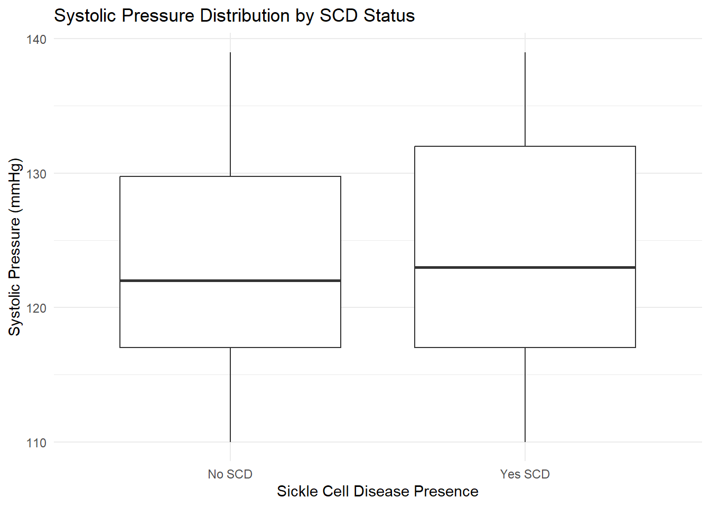
2: Boxplot Interpretation Box: The box represents the interquartile range (IQR), extending from the first quartile (Q1, 25th percentile) to the third quartile (Q3, 75th percentile). This range contains the middle 50% of the data. The line within the box marks the median (Q2, 50th percentile), indicating the central tendency of the data. Whiskers: The lines extending from the top and bottom of the box (the “whiskers”) typically represent the range of the data, extending up to 1.5 times the IQR from the box’s edges. Points beyond the whiskers are often considered outliers. Dots: Individual points beyond the whiskers are usually plotted as dots and represent outliers, indicating data points that fall outside the expected range based on the IQR.
3: Interpratation The plot shows the distribution of systolic pressure across two groups: individuals without Sickle Cell Disease (SCD) and those with SCD. The central line in each box represents the median value of systolic pressure for each group. The boxes themselves represent the interquartile range (IQR), containing the middle 50% of the data. The whiskers show the range of the data, excluding outliers. It seems the overall range of systolic pressure is slightly wider in the “Yes SCD” group, and there are a few outliers in both groups.
Is this expected?
Generally, if SCD affects the blood in a way that could influence blood pressure, we might expect to see differences in the distribution between the two groups. The fact that the medians are similar suggests that SCD might not have a strong impact on the median systolic pressure, but the wider variability in the “Yes SCD” group could indicate that SCD has other effects on blood pressure that might not be captured by the median alone.
For example, SCD can lead to complications like anemia, which could affect blood pressure. Also, treatment for SCD might involve medications that affect blood pressure. Without more context, it’s hard to say whether this plot matches expectations. It would be important to compare these results with medical literature or clinical expectations.
20.3.5 Question 4: Body Mass Index (BMI) Analysis
- Create a new variable
BMIfor each subject and add it to the data. - Generate a histogram to describe the distribution of BMI. Assess if it appears normally distributed.
- Calculate descriptive statistics for BMI: mean, standard deviation (sd), minimum, maximum, first and third quartile, and median.
- Discuss which of these statistics you would prefer to report in a publication and why.
- Categorize subjects into BMI groups as per WHO standards and count how many subjects fall into each category.
- Create a barplot to visualize the frequencies of each BMI group.
- Compare the BMI distribution between subjects with and without SCD using barplots. Note any differences observed.
Question 4: Click to see solution
- Creating a New BMI Variable
# Adding a new BMI variable to the data frame
d <- d %>%
mutate(BMI = weight/(height/100)^2) # Height is converted to meters by dividing by 100- Generating a Histogram
# Generating a histogram for BMI distribution
ggplot(d, aes(x=BMI)) + # Initialize a ggplot with 'd' as the data and 'BMI' as the x-axis aesthetic
geom_histogram(binwidth=1, color="black", fill="white") + # Add a histogram layer with bins of width 1, black borders, and white fill color
xlab("Body Mass Index") + # Set the label for the x-axis as "Body Mass Index"
ggtitle("Distribution of Body Mass Index") # Add a title to the plot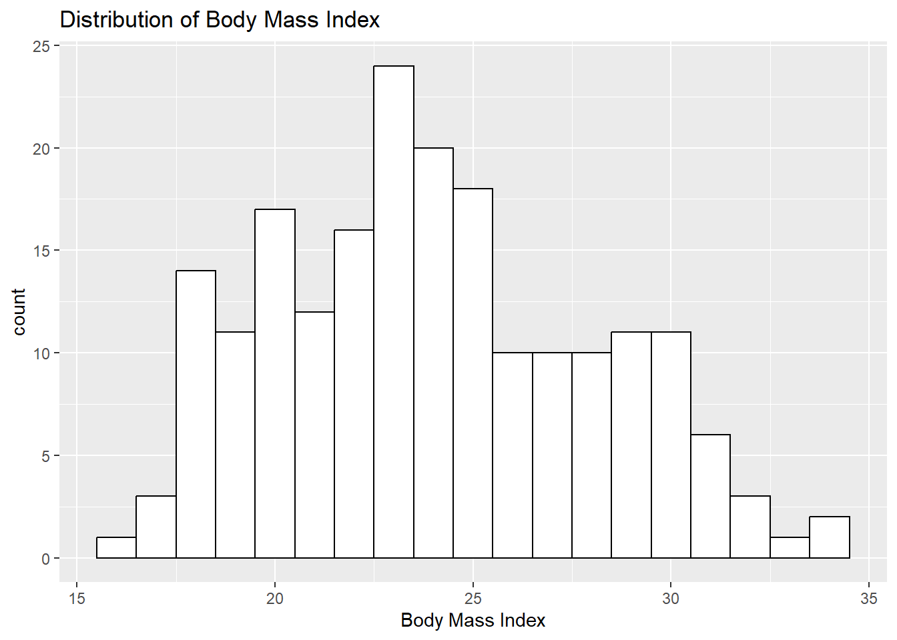
- Calculating Descriptive Statistics
# Calculating descriptive statistics for BMI
d %>%
summarise(
mean_BMI = mean(BMI), # Calculate the mean (average) of the BMI values
sd_BMI = sd(BMI), # Calculate the standard deviation of the BMI values, which measures the amount of variation
min_BMI = min(BMI), # Find the minimum BMI value in the dataset
max_BMI = max(BMI), # Find the maximum BMI value in the dataset
first_quartile = quantile(BMI, 0.25), # Calculate the first quartile (25th percentile) of the BMI values
third_quartile = quantile(BMI, 0.75), # Calculate the third quartile (75th percentile) of the BMI values
median_BMI = median(BMI) # Calculate the median (50th percentile) of the BMI values
) mean_BMI sd_BMI min_BMI max_BMI first_quartile third_quartile median_BMI
1 24.01403 4.007499 16.10437 34.38446 20.90738 26.63218 23.61231- Preferred Statistics for Publication
# Categorizing subjects into BMI groups as per WHO standards
d <- d %>%
mutate(
# The cut function is used to divide the BMI into categories based on WHO standards.
BMIgroup = cut(
BMI, # The numeric vector to be divided into intervals
breaks = c(0, 18.5, 25, 30, Inf), # Define the boundaries of the categories
labels = c("Underweight", "Normal", "Overweight", "Obese"), # Labels for the categories
include.lowest = TRUE, # Include the lowest value in the first interval
right = FALSE # Intervals are left-closed (i.e., the right endpoint is not included)
)
)- Counting Subjects in Each BMI Category
# Counting the number of subjects in each BMI category
d %>%
count(BMIgroup) BMIgroup n
1 Underweight 18
2 Normal 107
3 Overweight 59
4 Obese 16- Creating a Bar Plot for BMI Categories
# Creating a bar plot for the frequencies of each BMI group
# Use the ggplot function to initialize the plot with the data frame 'd' and
# set the aesthetic mappings.
ggplot(d, aes(x=BMIgroup)) + # Initialize the plot specifying 'd' as the data and 'BMIgroup' as the x-axis
geom_bar( # Add bars to represent counts of each BMI category
color="black", # Outline color of the bars
fill="grey", # Fill color of the bars
show.legend = FALSE # Do not show legend for bars
) +
geom_text( # Add text labels on top of the bars
stat = 'count', # Use the count statistic to determine the number to display
aes(label = ..count..), # Use the computed count for the label
vjust = -0.5, # Vertically adjust text to be just above the bars
color = "black" # Text color
) +
xlab("Body Mass Index Categories") + # Customize the x-axis label
ylab("Number of Subjects") + # Customize the y-axis label
ggtitle("Frequencies of BMI Categories") # Add a title to the plot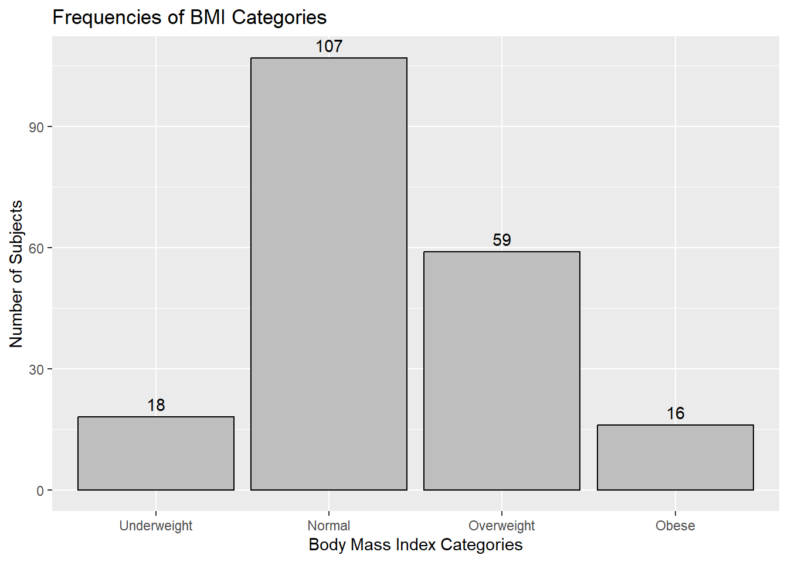
- Comparing the BMI Distribution by SCD Status
# Comparing the BMI distribution between subjects with and without SCD
d %>%
group_by(scd, BMIgroup) %>%
summarise(count = n()) %>%
mutate(proportion = count / sum(count)) %>%
ggplot(aes(x=BMIgroup, y=proportion, fill=as.factor(scd))) +
geom_bar(stat="identity", position="dodge") +
scale_fill_manual(values=c("blue", "red"), labels=c("No SCD", "Yes SCD")) +
xlab("Body Mass Index Categories") +
ylab("Proportion of Subjects") +
ggtitle("BMI Distribution by SCD Status")`summarise()` has grouped output by 'scd'. You can override using the `.groups`
argument.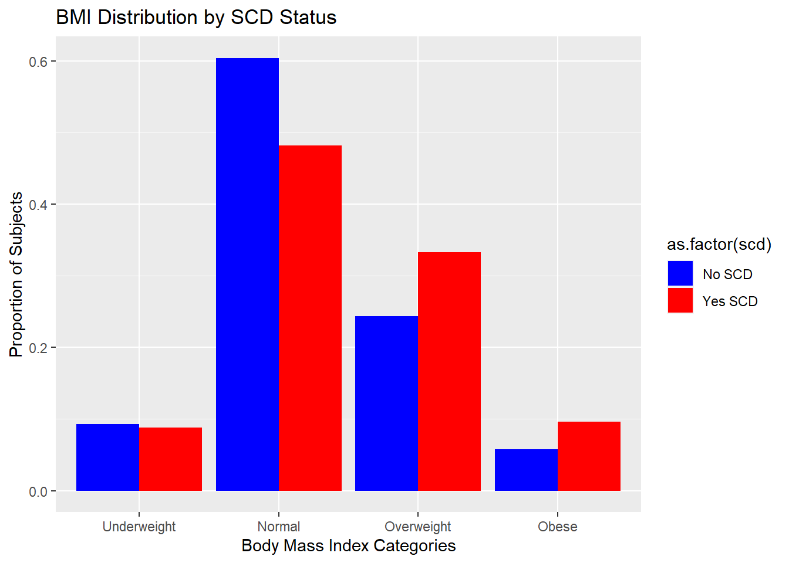
20.3.6 Question 5: Diastolic Pressure Analysis
- Calculate the mean and standard deviation of diastolic pressure among subjects with and without SCD.
- Determine the 95% confidence interval of the mean diastolic pressure for both groups. Discuss your conclusions.
- Calculate the 95% prediction intervals for diastolic pressure in both groups. Provide an interpretation in plain English.
20.3.7 Question 6: Systolic Pressure and Gender Analysis
- Compute the 95% confidence interval of the mean systolic pressure for subjects with and without SCD.
- Perform the same analysis for female subjects only.
- Use a dotplot (stripchart) to visually compare systolic pressure among females with and without SCD.
- Generate QQplots to assess the normal distribution of systolic pressure among females in both groups.
- Count how many observations come from women with and without SCD.
- Based on the above analyses, evaluate the reliability of the 95% confidence intervals.
20.3.8 Question 7: Mean Arterial Pressure (MAP)
- Add a new variable
MAPto the data, representing Mean Arterial Pressure. - Visualize the distribution of MAP among subjects without SCD using a histogram and QQplot.
- Produce a “Wally plot” for a comparative analysis of MAP distribution.
- Estimate the normal range of MAP and compare it with established standards.
20.4 Further reading
20.5 Resources
- SCD simulated data:
data/scd_simulated_data.rda; examples:dev_code_data/Pheno_fam_correlation.Rmd.
R Core Team. n.d. CRAN (Comprehensive r Archive Network). https://cran.r-project.org/.
“Stack Overflow - r Tag.” n.d. https://stackoverflow.com/questions/tagged/r.
Wickham, Hadley. 2016. Ggplot2: Elegant Graphics for Data Analysis. Springer-Verlag New York. https://ggplot2-book.org/.
Wickham, Hadley, and Garrett Grolemund. 2017. R for Data Science: Import, Tidy, Transform, Visualize, and Model Data. O’Reilly Media, Inc. https://r4ds.had.co.nz/.